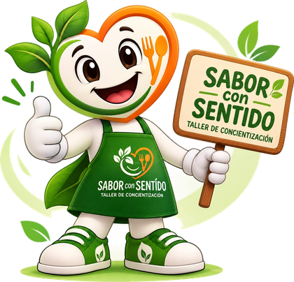
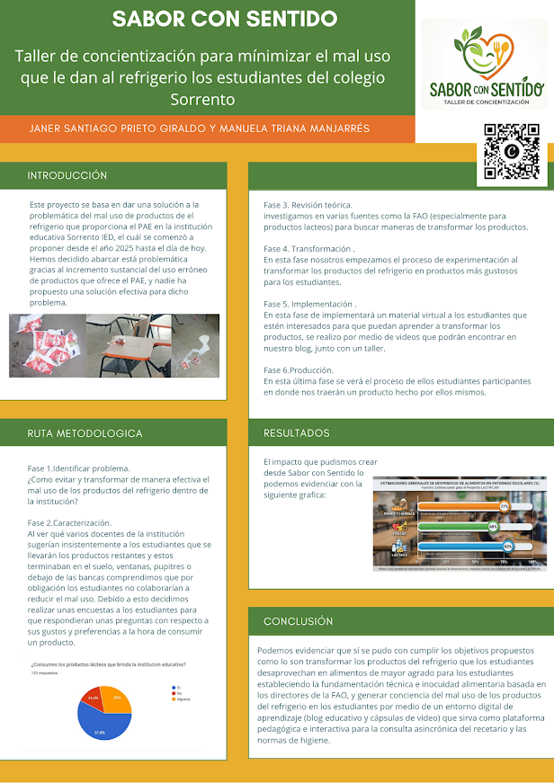

Objeto Virtual de Aprendizaje
Bienvenidos a Sabor con Sentido
Un espacio para aprender por qué el refrigerio escolar importa, qué pasa cuando se desperdicia y cómo podemos darle un nuevo sentido entre todos.
Comenzar el recorrido¡Hola! Soy Senti. Te acompaño a aprender cómo no desperdiciar comida.

¿Qué vas a encontrar aquí?
Esta página fue creada por estudiantes del Colegio Sorrento IED para toda la comunidad educativa. Recorre las secciones en orden o entra a la que más te interese.
Problemática
Qué está pasando con el refrigerio y por qué nos afecta.
Sondeo
Cuéntanos qué piensas del refrigerio.
Resultados
Solo para docentes.
PAE
Conoce de dónde vienen los alimentos que recibimos.
Evaluación
Demuestra todo lo que aprendiste, jugando.
Créditos
Quiénes hicimos esto y en qué nos apoyamos.
Desde hace algunos años se presenta un rechazo de diversos alimentos del refrigerio del Programa de Alimentación Escolar (PAE). Muchos productos se abandonan o se desechan en diferentes espacios de la institución, lo que genera problemas de insalubridad.
El proyecto abarca todos los componentes del refrigerio: lácteos, frutas, panificados, cereales y bebidas.
Soportes de la problemática
Consultar los soportes de la problemática (se abre en una pestaña nueva)
Queremos entender, desde tu experiencia, por qué muchos estudiantes no consumen el refrigerio. Tus respuestas nos ayudarán a crear propuestas que de verdad funcionen.
Responde con sinceridad: no hay respuestas buenas ni malas.
Responder el sondeo (se abre en una pestaña nueva)
El sondeo se abre en una pestaña nueva.
Acceso exclusivo para docentes. Esta información es solo para el cuerpo docente de la institución.
Reporte estadístico del sondeo, para conocer los resultados de un vistazo. Así podemos entender mejor por qué se desperdicia el refrigerio y qué podemos hacer al respecto.
- 57estudiantes respondieron
- 58%rechaza panes y harinas
- 56%menciona el sabor como razón
- 54%asistiría o tal vez asistiría a un taller
Razones por las que no consumen algunos productos
Porcentaje de estudiantes que mencionó cada razón. Una persona puede mencionar varias.
Productos que no les gusta consumir
Porcentaje de estudiantes que mencionó cada grupo de productos.
Productos que sí les gusta consumir
Porcentaje de estudiantes que mencionó cada grupo de productos.
¿Asistirían a un taller para transformar estos productos?
Respuestas del sondeo
Ver respuestas del sondeo (se abre en una pestaña nueva)
Sondeo respondido por 57 estudiantes entre el 23 y el 25 de octubre de 2026. Las respuestas abiertas se agruparon de forma aproximada por categorías, por lo que los porcentajes son una estimación.
El Programa de Alimentación Escolar (PAE) entrega el refrigerio a los estudiantes de la institución. En este video conocerás de dónde vienen los alimentos que recibimos.
Es hora de poner a prueba lo aprendido. Juega en Kahoot y responde las preguntas sobre el refrigerio escolar y cómo evitar su desperdicio.
Para entrar: pulsa el botón e ingresa el PIN que compartirán tus docentes.
Jugar en Kahoot (se abre en una pestaña nueva)
Kahoot se abre en una pestaña nueva.
Proyecto desarrollado por estudiantes del Colegio Sorrento IED.
Autores
Santiago Prieto y Manuela Triana
Grado 1101, Promoción 2026
Énfasis en exactas
Bibliografía
Consultar la bibliografía del proyecto (se abre en una pestaña nueva)
Póster
